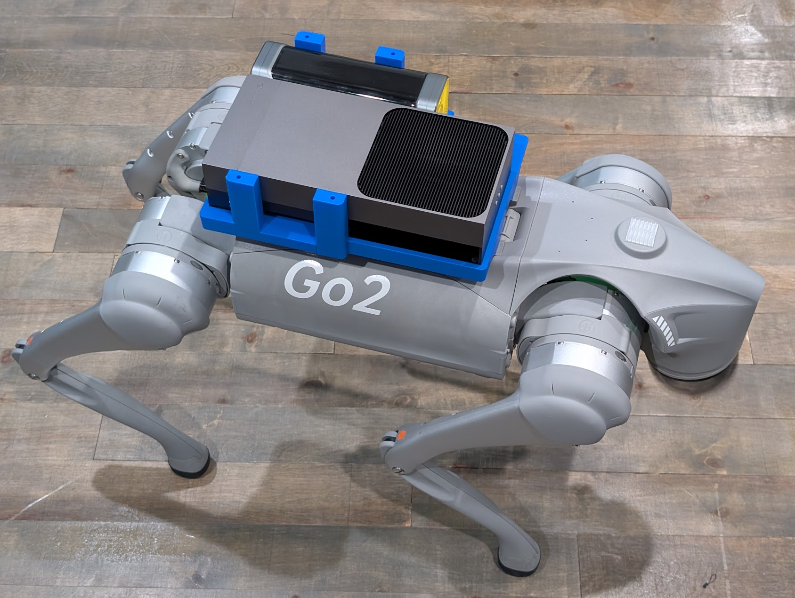
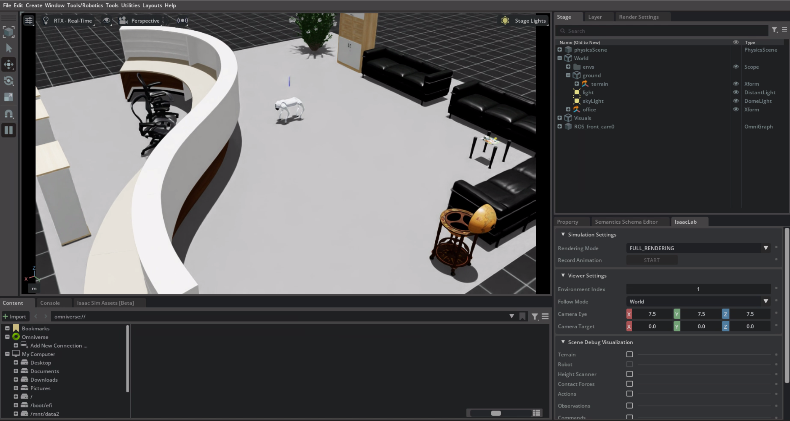

The ODD Observer system is built around the Unitree Go2 Pro quadruped robot, with both real hardware and NVIDIA Isaac Sim environments for data collection.
The Unitree Go2 Pro is a compact, agile quadruped robot designed for research and real-world applications. It features 12 degrees of freedom, integrated sensors, and an onboard NVIDIA Jetson for edge computing.
| Dimensions | 70 × 31 × 40 cm (L×W×H) |
| Weight | ~15 kg |
| Degrees of Freedom | 12 (3 per leg) |
| Max Speed | 3.5 m/s |
| Onboard Compute | NVIDIA Jetson Thor |
| Battery | ~2 hours runtime |

The Go2 Pro includes several sensors used by the ODD Observer pipeline:
Wide-angle RGB camera for visual perception, environment classification, and human/animal detection.
3D LiDAR for point cloud capture, transformed into Bird's Eye View (BEV) images for obstacle and terrain analysis.
Accelerometer, gyroscope, and magnetometer for motion state estimation, collision detection, and platform stability.
ROS2 support for the Go2 is enabled by the excellent go2_ros2_sdk by @abizovnuralem.
This SDK provides ROS2 Humble integration, enabling access to camera topics, LiDAR point clouds, IMU streams, odometry, and robot state—all essential for the ODD Observer data pipeline.
Key ROS2 topics used by ODD Observer:
/camera/image_raw # Front camera RGB images /point_cloud # LiDAR point cloud (transformed to BEV) /imu/data # 9-axis IMU (accel, gyro, orientation) /odom # Odometry for position tracking /go2/robot_state # Joint states, foot contacts
For controlled testing and scenario generation, we use NVIDIA Isaac Sim 4.5.0 with the go2_omniverse integration (also by @abizovnuralem).
The simulation environment provides:

ros2 bag recordThe ODD Observer pipeline automatically detects whether data comes from simulation or real hardware. Key differences:
| Aspect | Simulation | Real Robot |
|---|---|---|
| Image Quality | Clean, consistent lighting | Compression artifacts, motion blur |
| LiDAR Point Cloud | Sensor frame, requires TF transform | Often pre-transformed to odom frame |
| IMU Noise | Minimal, predictable | Real sensor noise, drift |
| Environment | Controlled office scene | Varied residential/lab environments |
| Edge Cases | Can be deliberately created | Occur naturally, less controlled |
Special thanks to @abizovnuralem for the go2_ros2_sdk and go2_omniverse projects, which made ROS2 integration and Isaac Sim simulation possible for the Go2 platform.